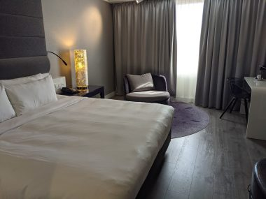
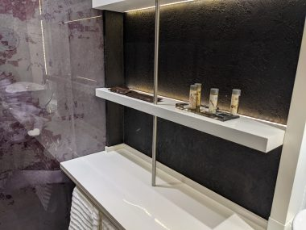
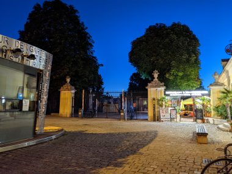
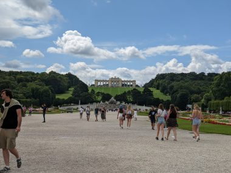
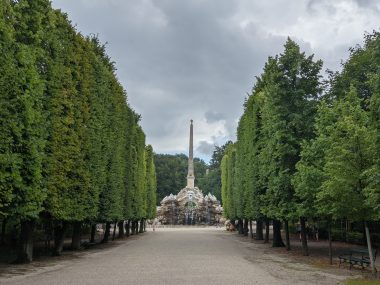

オーストリアのウイーンでノマドワーク
コロナ禍でJ次郎の会社も完全リモートワークを導入している。出社の必要がないとなると、二人ともワクチン接種は済ませ、コロナが落ち着いてきた今、海外でのノマドワークには良い機会。やはりコロナが落ち着いているオーストリアのウイーンへ向かった。
泊まったホテルはマリオットホテル系列のルネッサンスホテル。
Ｊ次郎はリモートワークするので、二人が部屋で多くの時間を過ごすことを見越して、二人がけソファーとテーブルがある、スタンダードの一つ上のランクのプレミアムの部屋を予約した。が、実際の部屋にはソファーとテーブルがない。あるのはスタンダードと同じ一人がけソファ。受付に文句を言ったら、写真が違うだけ、案内したのは確かにプレミアムルームで、写真が違っているだけ、とおっしゃる。せっかく貯めたポイントを無駄遣いしたようなかたちになり、J次郎は憤慨していた。
どうみても、スタンダードルームの部屋に、シャンプーや石鹸類、コーヒーマシーン、バスローブやスリッパなど補充可能なアメニティ類の質がちょっとアップグレードされているだけ。


しかも、タオルの交換や石鹸類の補充は、新しいのを自分で一階のフロントデスクにとりに行かなければならないという、セルフサービス制度だった。ルームクリーニングにいたっては、前日迄の予約制。これで正規の料金をとるんだ、、、。
どういう事情があるのかというと、コロナの影響で半分近く人員を解雇してしまい、再雇用が追いついていないとのこと。それを聞いたらまあ仕方ないか、という気にもなってきたが、それならそのぶん料金も安くしてほしかった、、、。
ただ、ＷＩＦＩ環境も良かったし、ロビーフロアにはリモートワークスペースが設けられているので、そこで仕事できた。
ここのホテルは旧市街から地下鉄で5駅ほど離れている。それでも、地下鉄Ｕ４の駅のMeiding Hauptsr の目の前にあるし、徒歩１０分ほどでシェーンブルン宮殿へ行ける距離にある。
夜にぶらっと宮殿の庭へと散歩にでた。
ホテルからSchonbrunner通りをずっと歩いてつきあたりにある、Grunberg通りに面したところにある宮殿の庭への入り口がある。

宮殿のなかには入れないが、街灯のともるなか散策できて夏の夜の散歩が気持ちいい。
↓正面玄関側の宮殿。
後日、昼間に宮殿内部の見学に訪れた。オンラインで事前に予約できたので並ばずに入れる。
ここでは内部の見学には各自がオーディオガイド機器を手に持って進む方式がとられている。この機器に、飛行機の機内で配られるイヤホンを持参して接続すると、手にもつ必要がなくなり、首にかけたままで歩けるので便利だった。
↓庭側の宮殿。
広大な庭はよく手入れされ、散策するのが楽しい。


↓ 使ってます（アフェリエイト）↓
↓オンラインですべて完了